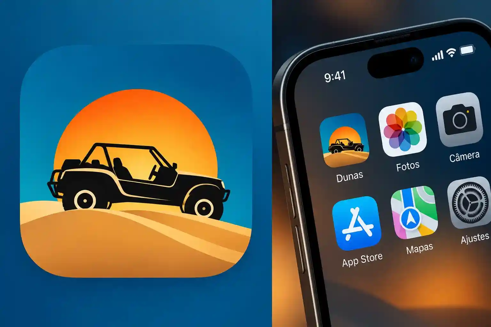

Conexão local
Profissionais que conhecem cada curva, duna e história do RN.
EXPLORE O RIO GRANDE DO NORTE
Conectamos você aos melhores bugueiros para viver paisagens inesquecíveis com liberdade, segurança e a praticidade de um app.
SOBRE NÓS
A Dunas nasceu para tornar simples o encontro entre quem quer explorar e quem conhece cada caminho.
Nossa missão é conectar turistas e bugueiros locais por meio da tecnologia, valorizando profissionais da região e criando passeios autênticos pelo litoral potiguar.
Profissionais que conhecem cada curva, duna e história do RN.
Roteiros com paradas personalizáveis, respeitando o seu ritmo.
Experiências planejadas conforme as condições e disponibilidade.
PASSEIOS
Explore roteiros inesquecíveis pelos litorais do Rio Grande do Norte e da Paraíba.
Experiências conduzidas por bugueiros parceiros.
Paradas e trajetos podem variar conforme as condições locais, a segurança e a modalidade escolhida.
SUA AVENTURA COMEÇA AQUI
Conheça a Dunas, escolha seu roteiro e conecte-se a bugueiros locais para uma experiência inesquecível.
Aplicativo em preparação. Links de download serão disponibilizados no lançamento.

CONTATOS
Tem dúvidas sobre a Dunas ou precisa de ajuda? Nosso time está pronto para atender você.